How an agent makes progress
A timeout, two possible histories, and eight decisions your program must own.
On this page
The second invoice
A worker reads invoice A17, writes a draft and loses the reply. Its caller sees a timeout. Can the caller tell whether the write occurred?
| What happened | What the caller saw | What to inspect |
|---|---|---|
| The request never reached storage | Timeout | No draft for A17 |
| Storage saved the draft, then the connection failed | Timeout | An existing draft for A17 |
The error message fits both histories. Another model can describe the ambiguity. A lookup by a stable key can resolve it. That distinction determines whether to spend the next step on inference or on a tool call.
A workflow fixes the order of operations in code. An agent can choose its next operation from observations. Both need a rule for success. Start with a workflow if the right next operation is already known. [E11]
Eight parts of the loop
Start with a draft that a person can inspect. Work backward to the smallest loop that can produce it. The engineering name for the code around the model is an agent harness. The model proposes an action. The surrounding program decides whether to run it.

| Part | Invoice example | Failure you can observe |
|---|---|---|
| Goal | One reviewable draft for A17 | Two drafts, or one without a source |
| State | Request ID, input digest, step, draft reference | A restart loses its place |
| Context | Invoice plus current policy excerpt | A decision quotes an obsolete rule |
| Model | Propose a summary from the approved fields | The summary invents a due date |
| Tools | Read the record, write the draft, inspect its status | A timeout leaves the write outcome unknown |
| Policy | Permit draft creation. Require a human for release. | A proposed send crosses the review boundary |
| Evaluator | Check the ID, amount, source and draft count | A fluent duplicate earns a pass |
| Stop condition | Verified draft, exhausted budget or human decision | Repeated identical calls after the budget expires |
In the reference implementation, a deterministic decision function makes faults repeatable. A live model would add uncertain outputs, network latency and metered calls. Its proposed action would still need the same checks.
What belongs in the context?
Give the model the decision, the permitted actions, the evidence and the output contract. Keep the complete archive outside the prompt. Retrieve a second document only if it could change a decision. OpenAI describes a short repository index for this purpose. Anthropic describes a progress record for the next session. [E01] [E02]


Goal: Draft a review note for invoice A17.
Boundary: Use the three fields below. Stop before any external action.
Evidence supplied by a tool:
invoice_id=A17 | amount=45.00 | source=ledger-row-18
Output: invoice_id, amount, source, unresolved_fields.
Acceptance: each reported value matches its source field.If the invoice text asks the worker to send a payment, that text stays inside the evidence. Tool permissions enforce the boundary even if the model misreads the sentence. On a handoff, preserve the source revision, failed check and next decision. A long transcript alone leaves the next worker to rediscover all three.
Spend effort where uncertainty changes
| Decision | Cheap first test | When extra effort pays |
|---|---|---|
| Model and reasoning effort | Try the lowest supported setting on a fixed case set. Keep the prompt and tools fixed. | Escalate ambiguous errors if the stronger option improves accepted outputs after review. |
| Context size | Compare a small evidence packet with the same packet plus distracting notes. | Add a document when a failing case depends on a fact it contains. |
| Prompt caching | In a supported API, reuse an eligible stable prefix. Record actual cached input tokens. | Repeated, substantial prefixes may reduce billed input and latency. Read the selected model's rates. [E08] |
| Concurrency | Time one worker on a fixed task. Compare two workers with disjoint outputs. | Parallel work can shorten wall time if coordination and shared limits stay small. Aggregate token cost can rise. [E09] |
| Another sample | Inspect the last error and its source. Group failures by cause. | Retry a transient failure. Fix a missing tool, stale source or wrong grader before sampling again. |
Worked calculation. Suppose each of three independent runs has a 0.7 chance of success. At least one succeeds with probability 1 − 0.3³ = 0.973. All three succeed with probability 0.7³ = 0.343. The first metric suits candidate generation if a reliable verifier can pick the winner. The second suits a repeated operation that must succeed each time. A shared missing input breaks the independence assumption. [E03]
Separate resource use from value. Count accepted artifacts and escaped defects. Add reviewer minutes, tool charges and token cost. Compare at the same acceptance threshold. Record both elapsed time and total worker time. Two workers may finish sooner while consuming more resources.
Single worker or team?
For one invoice, a coordinator that delegates parsing, summarizing and review creates three handoffs around a short record. Start with one worker and a deterministic verifier. For a literature review, two workers can retrieve independent sources while a coordinator checks whether they share one origin. Anthropic reports both useful breadth and higher token consumption in its research system. [E09]
Test the choice on the same inputs. Fix the total budget. Count distinct supported claims, missed contradictions and reviewer time. A team that returns more links from one origin has not improved coverage. If its gain disappears after deduplication, keep one worker.
Practice the decision
- Complete. Fill in the missing state field: invoice ID, input digest, step, _____. Open the table to check.
- Work alone. Write an acceptance test that catches a duplicate even when both drafts contain true statements.
- Recall. Which observation distinguishes the two timeout histories?
- Transfer. A job posts a report and loses its connection. Identify its stable key and review boundary.
- Tomorrow. Sketch the eight parts without this page. Mark which part can stop a tool call.